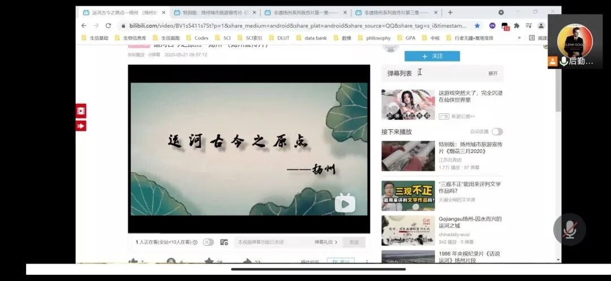
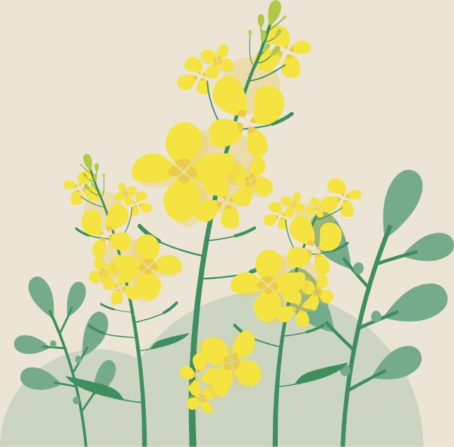
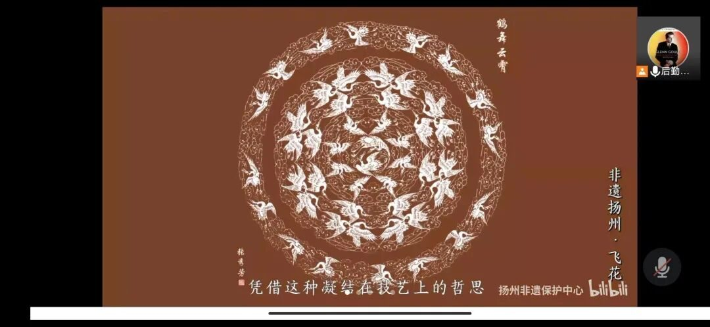

【行者无疆 寓绻淮扬】 非遗文化
行者无疆
寓绻淮扬
非遗文化
运河一道，将南北两岸两千载文明相连
剪纸一面，把四季轮回万千类生灵勾勒
雕印一版，是千年墨香浸没过字里行间
本期线上调研围绕扬州的非遗文化展开，分别从扬州景观，剪纸非遗和雕版印刷非遗展开。以腾讯会议为交流平台，相关视频资源为参考资料，实践团的成员们虽然远隔千山万水，但思想终汇聚一堂。


HELLO JULY
一.梦起运河，诗意淮扬
说起扬州的景观，有万里相思黄鹤楼，有二十四桥明月夜，有瘦尽春城十二楼，可在历史上对南北方文化交流影响最大的就莫属运河了。古运河扬州段是整个运河中最古老的一段，可以说一部扬州运河发展史，就是一部古代运河发展史。
走进扬州，感受扬州，是“春风十里扬州路，卷上珠帘总不如”；美哉扬州，秀哉扬州，是“天下三分明月夜，二分无赖是扬州”；诗亦扬州，画亦扬州，是“半湾新月漾银钩，瘦尽春城十二楼”。

HELLO JULY
二.飞花灵秀，雅致光阴
作为扬州最重要的非物质文化遗产之一，扬州剪纸以灵秀典雅为特色材料多选用素白的安徽宣纸。一张张素白的宣纸在手指翻飞间幻化成无尽的四季花鸟和四时光阴。
仅是一朵菊花便大有学问：阳剪勾勒出花瓣，主体或劲健或摇曳的风姿，阴剪梳理出枝叶，背景或繁复或精炼的结构。从空间的布百到枝叶的穿插再到线条的衔接，每一个起承转合都体现着人的匠心和剪的魅力。

HELLO JULY
三.雕版印刷，墨香千年
雕版印刷，起源于中国，发祥于扬州。肇始于隋，行于唐世，扩于五代，精于宋人，盛于明清。古老的技艺世代坚守，字里行间，四散出千年的墨香。
手握拳刀，高难的刀法，随心的节奏，由经年的时光和无数的汗水共同磨砺而成。深浅，轻重，快慢，起伏，拳刀在木板上行进，有节奏的犁出文化积淀的古老字符，犁出岁月汇就的涓涓记忆。
今天是线上实践开展的第一天，距离和时间都没有将大家的热情消散。
实践团成员一起观看相关文化科普视频，并对自己对扬州文化的认识和理解展开了积极分享，大家各抒己见，简单的文字背后难掩对扬州风景和文化的向往，仅仅只言片语便描绘出了一个大美扬州。

来源 | 行者无疆实践团
文字 | 杨佳
编辑 | 赵庭芳
审核 | 付媛 吕丰元